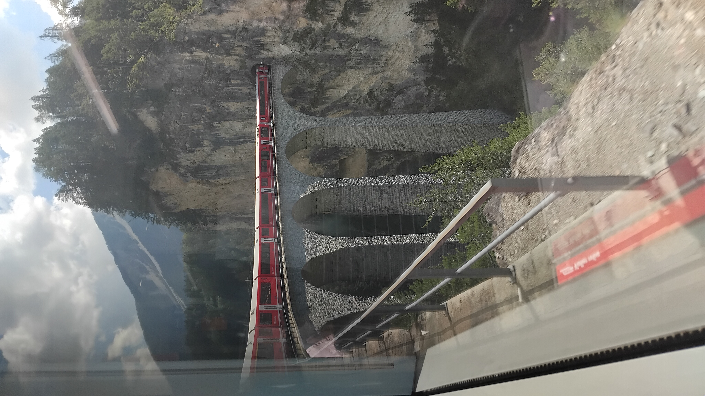

Given my mathematical background, it's perhaps no surprise my interest in trains is less of the "Ooh, it's a 37" and more of a fares, routeing and timetable persuasion. Of course, I enjoy the odd diversion over a bit of under-used track and I like exploring new places, but I don't enjoy standing in the same place for a couple of hours and watching what comes through. The links below are a few adventures I've been on which were interesting or fun - of course the list could go on and on but that would get very tiresome very quickly.